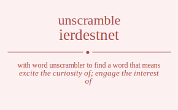

The word found after unscrambling ierdestnet means that excite the curiosity of; engage the interest of, be on the mind of, be of importance or consequence, having or showing interest; especially curiosity or fascination or concern, involved in or affected by or having a claim to or share in, .
ierdestnet has jumble solution. Please see which words made after unscrambling ierdestnet.
Daily Jumble Solution: interested
You can use following links to see other word jumble solutions for the same day
cotrek deewg drants ierdestnet rrevi

Unscrambled 10 letter words from ierdestnet
interested
Unscrambled 9 letter words from ierdestnet
teentsier
trendiest
tenderest
eternised
teredines
Unscrambled 8 letter words from ierdestnet
insetter
interest
sternite
trientes
teeniest
eternise
teensier
strident
tridents
tiredest
dinettes
insetted
retinted
inserted
nerdiest
resident
sintered
trendies
detester
retested
detentes
tentered
renested
resented
reediest
neediest
nereides
redenies
Unscrambled 7 letter words from ierdestnet
retints
stinter
tinters
netters
tenters
testier
nettier
tentier
entires
entries
retines
trienes
teeters
entrees
retenes
teeners
eeriest
teenier
eserine
dentist
distent
stinted
trident
tinders
detents
tenders
diester
dieters
reedits
resited
dinette
destine
endites
deniers
nereids
resined
reested
steered
detente
entered
needers
sneered
seedier
needier
Unscrambled 6 letter words from ierdestnet
sitter
tetris
titers
titres
triste
sitten
retint
tinter
estrin
inerts
insert
inters
niters
nitres
sinter
triens
trines
retest
setter
street
tester
tenets
netter
tenter
enters
nester
renest
rentes
resent
tenser
ternes
treens
resite
reties
tentie
entire
retine
triene
nereis
seiner
serein
serine
settee
testee
teeter
terete
entree
eterne
retene
teener
reseen
serene
trends
direst
driest
stride
tinted
teinds
rident
tinder
trined
diners
rinsed
snider
detest
tested
retted
desert
deters
rested
detent
netted
tented
nested
tensed
rented
tender
denser
enders
resend
sender
dieter
reedit
retied
tiered
desire
eiders
reside
endite
denies
dienes
seined
denier
nereid
reined
reseed
seeder
needer
Unscrambled 5 letter words from ierdestnet
stint
tints
trets
netts
stent
tents
nerts
rents
stern
terns
tetri
titer
titre
trite
resit
rites
tiers
tires
tries
inset
neist
nites
senti
stein
tines
inert
inter
niter
nitre
trine
reins
resin
rinse
risen
serin
siren
ester
reest
reset
steer
stere
terse
trees
tenet
sente
teens
tense
enter
rente
terne
treen
ernes
sneer
retie
siree
seine
resee
eerie
dirts
dints
rinds
drest
dents
tends
trend
nerds
rends
deist
diets
dites
edits
sited
stied
tides
tired
tried
dries
resid
rides
sired
teind
tined
dines
nides
snide
diner
deets
steed
deter
treed
deers
drees
redes
reeds
seder
sered
denes
dense
needs
ender
eider
diene
Unscrambled 4 letter words from ierdestnet
tits
stir
tint
nits
snit
tins
rins
sett
stet
test
tets
tret
erst
rest
rets
tres
nett
tent
nest
nets
sent
tens
rent
tern
erns
site
ties
rite
tier
tire
ires
reis
rise
sire
nite
tine
sine
rein
tees
rete
tree
rees
seer
sere
teen
esne
seen
sene
erne
dits
dirt
rids
dint
dins
rind
teds
reds
dent
tend
dens
ends
send
sned
nerd
rend
diet
dite
edit
tide
tied
dies
ides
side
dire
ired
ride
deni
dine
nide
deet
teed
dees
seed
deer
dere
dree
rede
reed
dene
need
eide
Unscrambled 3 letter words from ierdestnet
tit
its
sit
tis
sir
sri
nit
tin
ins
sin
rin
tet
set
ret
ers
res
ser
net
ten
ens
sen
ern
tie
sei
ire
rei
tee
see
ere
ree
nee
dit
dis
ids
rid
din
ted
eds
red
den
end
die
dee
Unscrambled 2 letter words from ierdestnet
it
ti
is
si
in
et
es
er
re
en
ne
id
de
ed